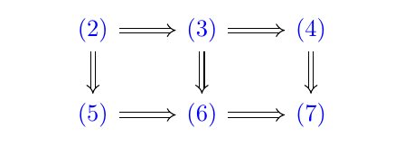

可算パラコンパクト空間とDowker spaces
1 準備
この章では基本的な概念を紹介する．
この文章では， で最初の可算順序数を表す．また， は の有限部分集合全体から成る集合を表す．
定義 1 (細分).
， を集合 の部分集合の族とする． このとき が の細分であるとは
となることである．
定義 2 (点有限族).
集合 の部分集合の族 が点有限であるとは の任意の点 に対して となる が有限個しかないことである
定義 3 (局所有限族).
位相空間 に於いて の部分集合の族 が局所有限であるとは の各点 について の近傍 が存在して この と交わる が有限個であるという条件 を満たすことである．
命題 4.
を位相空間 の局所有限な族とする． このとき
が成立する．111CLは閉包作用素である．
証明.
明らかに
が成り立つ． 逆向きの包含関係を示そう． とする． は局所有限なので の近傍 が存在して この と交わる は有限個であるという条件 を満たす． と交わる の元を とすると から
が成立する． しかし有限個の和集合については
が成り立つので結局
つまり
である． ∎
定義 5 (星形有限).
位相空間 に於いて の部分集合の族 が星形有限であるとは任意の に対して となる が有限個しかないときにいう．
注意.
星形有限な開被覆は局所有限である．
定義 6 (ハイポコンパクト).
位相空間が ハイポコンパクト であるとは空間の任意の開被覆に対して星形有限でかつ開被覆であるような細分が存在することである． 強パラコンパクトともいう．
定義 7 (パラコンパクト).
位相空間がパラコンパクトであるとは空間の任意の開被覆に対して局所有限でかつ開被覆であるような細分が存在することである．
定義 8 (メタコンパクト).
位相空間がメタコンパクトであるとは空間の任意の開被覆に対して点有限でかつ開被覆であるような細分が存在することである．
定義 9.
を無限基数とする．位相空間 の濃度が である任意の開被覆が，それぞれ点有限，局所有限な開細分被覆を持つとき， はそれぞれ -メタコンパクト， -パラコンパクトであるという． また，濃度が である任意の疎な閉集合族が互いに素な開集合族によって分離できるとき， は -族正規であるという．
定義 10.
位相空間 に於いて の部分集合族 が疎であるとは の各点 に対して の近傍 が存在して この と交わる が高々ひとつであるという条件 を満たすとき は疎であるという． もちろん が疎であるとき ならば である．
定義 11 (族正規).
位相空間 が族正規であるとは の閉集合からなる任意の疎な族 に対して となる開集合の族 が存在して
が成り立つことである．222 は要請しないことにする． 明らかに族正規空間は正規である．
事実 12.
空間において， メタコンパクトでかつ族正規であることと， パラコンパクトであることは同値である．
事実 13.
を無限基数とする． 空間において， メタコンパクトでかつ 族正規であることと， パラコンパクトであることは同値である．
注意.
一般に， 正規性と 族正規が同値である． のちに述べる， 空間における可算メタコンパクトと可算パラコンパクト性の同値性はこのことと， 上の事実の系と見ることもできる．
2 正規性
この章では， 被覆を用いた正規空間の特徴付けを紹介する．
定義 14.
位相空間 が正規であるとは の互いに素なふたつの閉集合 ， に対して， 互いに素な の開集合 ， が存在して ， を満たすときにいう． が とは が正規でかつ のときにいう．
定義 15 (開収縮).
位相空間 の開被覆 に対して が開収縮であるとは が の開被覆であって， 任意の について
を満たすこと．
定義 16 (閉収縮).
位相空間 の開被覆 に対して が閉収縮であるとは が の閉被覆であって， 任意の について
を満たすこと．
定理 17.
位相空間 について以下は同値である．
-
(1)
正規性．
-
(2)
点有限開被覆に開収縮が存在する．
-
(3)
局所有限開被覆に開収縮が存在する．
-
(4)
有限開被覆に開収縮が存在する．
-
(5)
点有限開被覆に閉収縮が存在する．
-
(6)
局所有限開被覆に閉収縮が存在する．
-
(7)
有限開被覆に閉収縮が存在する．
証明.
以下の論理包含図式は明らかであろう．
 |
これらを踏まえて以下では と を証明する．
[ の証明]
を の任意の点有限開被覆とし， は整列しているとする． 超限帰納法で
| (a) | |||
| (b) |
となる を構成する． を の最小元として，まず を構成する． と置くとこれは閉集合で が被覆を成すことから
となる．ここで の正規性を用いると
となる開集合 が存在する．このような のひとつを とおくと
を明らかに満たし 更に が の被覆を成している．
次に となる任意の については (a)と (b) を満たす が構成できているとしよう．このとき
と定義する．さて
となることを見よう． 背理法のために点 が存在したとしよう． は点有限なので となる は有限個であり，このようなもの全体を としよう．そして と置くと の定義と と より であり， となる について であるので に対する (b) から であるが， と の定義から になり，矛盾する．よって である．
最後にこのように作られた が の被覆になることを見よう． を任意に与える は点有限なので となる は有限個であり，このようなもの全体を としよう．そして と置くと ならば なので (b) から となる が存在する．よって は被覆となる．
[ の証明終わり]
[ の証明]
を交わらないふたつの の閉集合としよう．このとき は の有限開被覆なので から閉収縮 が存在する．つまり は
となるふたつの閉集合である．このとき と置くと，これらは開集合であり，更に である．また から
なので結局 は正規である．
[ の証明終わり]
∎
事実 18 (ウリゾーンの補題).
を正規空間とし， をその互いに素なふたつの閉集合とすると連続関数 が存在し
を満たす． つまり互いに素なふたつの閉集合は関数で分離できる．
定義 19.
の部分集合 が 集合であるとは， が可算個の の開集合の共通部分で表せるときにいう． また， が 集合であるとは， が可算個の の閉集合の和集合で表せるときにいう．
次の命題は，ウリゾーンの補題の応用のひとつであり，断りなく頻繁に使われる．
命題 20.
を正規とする． の閉集合 と開集合 は
を満たすとする．このとき の 閉集合 と 開集合 が存在して
となる．
証明.
ウリゾーンの補題から，連続関数 が存在して，
を満たす．ここで， ， とすると，それぞれ開集合と閉集合であり， を満たす． また， なので， は である．同様にして なので， は である．
∎
3 正規性が遺伝する部分集合
改めて 集合を定義する．
定義 21.
位相空間の部分集合 が， の 集合であるとは， が の可算個の閉集合の和集合で書けるときにいう． また， の部分集合 が， の 集合であるとは が の可算個の開集合の共通部分で書けるときにいう．
定義 22.
位相空間 のふたつの部分集合 が分離的であるとは，
を満たすときにいう．
正規空間において，ふたつの閉集合は分離できるが，一般に分離的なふたつの 集合を開集合で分離することができる．この性質は見かけ上は正規性よりも強いことを主張しているが，正規性と同値である．
命題 23.
を正規空間とし， ， を のふたつの 集合で，分離的なものとする．このとき の開集合 ， が存在して および， ， を満たす．
証明.
の閉集合からなるふたつの可算族 ， は ， および
を満たすとする． 開集合の可算族 ， を帰納的に，次を満たすようにとる．
実際，それ以前の集合が選ばれているとき，各右辺は閉集合の有限和の補集合なので開集合である．また， と であり， と は分離的である．さらに，それ以前に選んだ閉包はそれぞれ または を避ける．したがって，正規性による閉集合の開縮小を順に用いれば， と を選ぶことができる． 任意の について，
に注意しよう． そして，
とすると ， で なので，これで命題が証明された． ∎
補題 24.
の 集合 の閉部分集合は， の 集合である．
証明.
とし，各 を の閉集合とする． が の閉集合ならば，ある の閉集合 について と書ける．したがって であり， は の 集合である． ∎
系 25.
正規空間の 集合は正規である．
証明.
を正規空間 の 集合とし， ， を の互いに素な閉集合とする．先の補題から， ， は の 集合である．また，これらは の中でも分離的である．したがって命題23を適用すれば， ， は の開集合によって分離できる． ∎
定義 26.
位相空間 の部分集合 が一般化 集合であるとは，任意の の開集合 で となるものに対して， 集合 が存在して， を満たすときにいう．
補題 27.
の一般化 集合 の閉集合は の一般化 集合である．
証明.
の閉集合を とする．そして， の開集合 は を満たしているとする．ここで は の閉集合なので， の閉集合 が存在して を満たす． は の開集合であり， を満たす． は一般化 集合であるから， となる の 集合 が存在する． は なので ， は の閉集合，と表すことができる． そこで とし， とおく．これはもちろん 集合である． まず である．次に なので， である．以上から が一般化 集合であることがわかる． ∎
命題 28.
を正規空間とする． のふたつの分離された一般化 集合 と に対して， の開集合 ， が存在して ， と を満たす．
証明.
なので， が一般化 集合であることを用いて となる 集合 が存在する． は 集合である． また，同様に と に対して 集合 が存在して を満たす． そして と定義する． ここで なので となる．同様に となる．よって先の命題から と を分離する開集合が存在する．これは と も分離するので，これで証明が終わる． ∎
系 29.
正規空間 の一般化 集合は正規である．
証明.
一般化 集合の互いに素なふたつの閉集合は，先の補題によって の中で分離された一般化 集合である．したがって直前の命題を適用すればよい． ∎
定理 30.
以下は同値である．
-
(1)
は正規である．
-
(2)
の分離されたふたつの 集合は開集合で分離可能である．
-
(3)
の分離されたふたつの一般化 集合は開集合で分離可能である．
証明.
命題23から が従い，通常の 集合は一般化 集合なので が従う．また，直前の命題から が従う．最後に，互いに素な閉集合は分離された 集合であるから， が従う． ∎
注意.
距離空間の任意の部分集合や， の定常集合などが，一般化 集合となる．
4 可算パラコンパクト性とDowkerの定理
この章ではDowkerによる可算パラコンパクト性の特徴付けを紹介する． 以下に三つのコンパクト性の概念を導入する．
定義 31 (可算ハイポコンパクト).
任意の可算開被覆が星形有限な開細分被覆を持つときに可算ハイポコンパクトという．今日ではこの概念は可算強パラコンパクトと呼ばれることがとても多い．
定義 32 (可算パラコンパクト).
任意の可算開被覆が局所有限な開細分被覆を持つときに可算パラコンパクトという．
定義 33 (可算メタコンパクト).
任意の可算開被覆が点有限な開細分被覆を持つときに可算メタコンパクトという．
Dowkerの定理のために次の概念が必要である．
定義 34.
の可算単調被覆とは，可算被覆 で，
を満たすもののことをいう． また，閉集合の族 が単調減少とは
を満たすときにいう．
Dowkerの定理の前半部分を証明しよう．これはDowkerによる可算パラコンパクト性の特徴付けの中で，被覆による特徴付けに関する部分である．
定理 35.
を 空間とする．このとき以下は同値である．
-
(1)
は可算ハイポコンパクト
-
(2)
は可算パラコンパクト
-
(3)
は可算メタコンパクト
-
(4)
の可算開被覆は開収縮を持つ．
-
(5)
の可算単調開被覆は開収縮を持つ．
-
(6)
の可算単調開被覆は閉収縮を持つ．
-
(7)
の任意の単調減少な閉集合族 で，その共通部分が空なものに対して，開集合族 が存在して， と を満たす．
-
(8)
の任意の単調減少な閉集合族 で，その共通部分が空なものに対して， な閉集合の族 が存在して， と を満たす．
証明.
， はわかる． ， ， と を示す．
[ の証明]
を可算開被覆とし， をその点有限な開細分被覆とする．各 に対して となる を選び， とおく．すると は点有限な開被覆であり， である．定理17から， を満たす開被覆 が存在する．したがって は の開収縮である．
[ の証明]
命題20から直ちに従う．
[ の証明終わり．]
[ の証明]
を単調減少な閉集合族で を満たすものとする．
そして とすると， は可算単調開被覆である．よって条件 から を満たす閉被覆 が存在する． とすると，これは を満たす開集合であり， が被覆であることから を満たす．
[ の証明終わり]
[ の証明]
を可算開被覆とする．ここでは添字を正整数に取り直している． このとき は閉集合であり， は単調減少である． が被覆をなすことから である． このとき から な閉集合の可算族 が存在して と を満たす． は な開集合である．これを と書き，増大する閉集合族 を用いて と表す． とし，正規性を用いて帰納的に開集合 を となるようにとり， とおく．すると閉集合族 は と を満たす．
と定義する．定義式の右側の和集合は有限個の開集合の和になっていることに注意しよう． すると， の定義と式 (a) と (b) から
| (c) |
がわかる． が の被覆であることと， から， が の被覆をなしていることがわかる．よって の定義から
が成り立つ．
と定義する．
は開集合の族である．これが の細分になっていることは定義から明らかである．
まず が被覆であることを示そう． となる最小の を取る．すると である．さらに， であるので， となる をとれば， である．よって は被覆である．
最後に が星形有限であることを示そう． の定義から， ならば に注意しよう． すると， が交わりを持つ の元は の元のみであることがわかる．そしてこの集合は有限集合であるから は星形有限であることがわかる．
[ の証明終わり] ∎
次にDowkerの定理の後半を証明する．これは，コンパクト距離空間との直積に関する部分である．
定理 36.
位相空間 を とする．このとき 次の三つは同値である．
-
(1)
は可算パラコンパクトである．
-
(2)
任意のコンパクト距離空間 について は
-
(3)
は
証明.
は自明である．
[ の証明]
， を の交わらないふたつの閉集合とする． 今から かつ となる の開集合 を構成する． まず を の可算開基とする． について と定義する．
と について， を の に関するスライスとする．つまり，
である．
各 に対して としたとき， が開集合であることを示そう． まず が開集合であることを示そう． を任意に固定する． を任意に取る．このとき なので， ， の開近傍 ， が存在して となる は の開被覆なので，有限個の が存在して， で を被覆できる．ここで とするとこれは の開近傍である． さらに， である． を任意に取り， とする． つまり である． であり， なので， から である． つまり なので， である． よって は開集合である． も同様に開集合であることが示せる． 結果として は開集合であることがわかる．
次に が の被覆であることを示そう． を任意に取る．このとき が開基であることと， がコンパクトであることから が存在して， となるので， である．つまり は の被覆となる．
さて， は可算パラコンパクトであり， 先の定理 35から可算ハイポコンパクトであることがわかるので， これと 定理17の閉収縮の存在を組み合わせて， の星形有限な開被覆 と 写像 で を満たすものが存在することがわかる 333一般に星形細分の場合，添字集合を同じにとって，なおかつ とすることはできない． これを用いて と定義する． まず を示そう． とする． は の被覆なので となる が存在する． 特に である． よって は を満たす． 今 から なので， がわかる． つまり となる． 従って を得る． 次に が の局所有限な開集合族であることを証明しよう． 今 を任意に取る． 族 は の被覆なので， となる が存在する． また 族 は星形有限なので， と交わる の元は有限個であるから， 交わりを持つそれらを と表すことにしよう． このとき は の近傍であり， これと交わる の元の候補は ， ， ， しかない． よって は局所有限である．
族 の局所有限性から
が成り立つ． さらに
を満たし， の定義から なので， である． よって は である．
[ の証明終わり]
[ の証明]
を の単調減少な閉集合族で となるものとする．この集合族に対し， で， となるものを構成する．
の部分集合 を
と定義する．この集合が閉集合であることを示そう． としよう． のときは， が と交わりを持たない開集合となる．
のとき，十分大きい番号 をとれば のとき となるので， が と交わりを持たない開集合となる．よって は閉集合である．
さて， とすると， と は交わりを持たない の閉集合であるから， の正規性から，交わりを持たないふたつの の開集合 で
となるものが存在する．
ここで と定義する． すると， は開集合であり， から を満たす． また， を任意に取ると， なので， の近傍 と が存在して， となる． なので，特に である．つまり， である．よって がわかる． このことと先の定理から が可算パラコンパクトであることがわかる．
[ の証明終わり] ∎
セクション3において正規空間の一般化 集合は正規であることを示した．同様にして，可算パラコンパクトかつ も一般化 集合に遺伝する．このことをコンパクト距離空間との直積を用いたDowkerによる可算パラコンパクト性の特徴づけ，つまり定理36を用いて証明しよう．その証明の中ではいわゆるTube lemmaと呼ばれる議論を用いる． まずはそのTube lemmaを紹介しよう．
補題 37 (tube lemma).
を位相空間， をコンパクト位相空間とする．更に と の開集合 が
を満たしているとする．このとき における の開近傍 が存在して
を満たす．
証明.
とおく． と がそれぞれ と の開集合で， かつ を満たすような開矩形 全体を とおく．すると， は開集合族で直積の開集合の定め方から
が成り立つので は の開被覆である． は と同相であるからコンパクトなので
となる の有限部分族 が存在する．そして明らかに
であり
と置けば で
が成り立つので証明が終わる． ∎
ちなみにTube lemmaが成り立つことと， がコンパクトであることは同値である．
命題 38.
可算パラコンパクト 空間の一般化 集合は可算パラコンパクトである．
証明.
を 空間とし， をその一般化 集合とする． まず最初に系29から が であることがわかる． よって定理36から，任意のコンパクト距離空間 との直積 が正規になることが証明できればこの命題は証明される． そのために， が の一般化 集合である ことを証明しよう．そうすれば， の可算パラコンパクト性から は正規なので が正規であることもわかる．
を の開集合で となるものとする． さて，補題37から任意の に対して の における開近傍 が存在して を満たす．ここで と定義するとこれは の開集合であって， を満たし，さらに となる．ゆえに が の一般化 集合であるから， の 集合 が存在して を満たす．すると， がわかり， は明らかに の 集合なので は の一般化 集合であることがわかる． ∎
系 39.
可算パラコンパクト 空間の 集合は可算パラコンパクトである．
この系を用いて，Dowkerの定理をほんのちょっとさらに拡張することができる．
定理 40.
を 空間とする．このとき以下は同値である．
-
(1)
は可算パラコンパクト
-
(2)
は
-
(3)
任意の コンパクトな局所コンパクト距離空間 に対して， は正規
証明.
を可算パラコンパクトとすると が正規なので，その 集合に同相である の正規である．また，逆に が正規ならその閉部分空間 も正規である． これで と の同値性がわかる．コンパクト距離空間は， コンパクトな局所コンパクト距離空間なので， の条件から の可算パラコンパクト性がわかる．逆に を コンパクトな局所コンパクト距離空間とすると がコンパクトなら とし，コンパクトでないなら の一点コンパクト化を とする．いずれの場合にも はコンパクト距離化可能空間になるので， の可算パラコンパクト性から は正規空間になる． は の 集合なので は正規である． ∎
定理 41 (Dowker).
を 空間とする．このとき以下は同値である．
-
(1)
は可算ハイポコンパクト
-
(2)
は可算パラコンパクト
-
(3)
は可算メタコンパクト
-
(4)
の可算開被覆は開収縮を持つ．
-
(5)
の可算単調開被覆は開収縮を持つ．
-
(6)
の可算単調開被覆は閉収縮を持つ．
-
(7)
の任意の単調減少な閉集合族 で，その共通部分が空なものに対して，開集合族 が存在して， と を満たす．
-
(8)
の任意の単調減少な閉集合族 で，その共通部分が空なものに対して， な閉集合の族 が存在して， と を満たす．
-
(9)
任意のコンパクト距離空間 について は
-
(10)
は
-
(11)
は
-
(12)
は
-
(13)
は
-
(14)
離散空間ではないコンパクト距離空間 が存在して は
-
(15)
任意の コンパクトな局所コンパクト距離空間 に対して， は正規
-
(16)
離散空間ではない コンパクトな局所コンパクト距離空間 が存在して， は
-
(17)
は
証明.
逆に， を離散でない距離空間とする．非孤立点 をとり，互いに異なる点からなる列 で となるものをとる．必要なら部分列に移ることにより， は の閉部分空間であり， と同相であるとしてよい．したがって が ならば，その閉部分空間 も である．定理36から は可算パラコンパクトである．これにより と がともに従う． ∎
注意.
コンパクトな局所コンパクト距離空間の一点コンパクト化は， コンパクト性から無限遠点が可算な基本近傍形を持つので，距離化可能である．ブルバキの位相空間論では コンパクトが「無限遠で可算」と呼ばれている．
命題 42.
を可算パラコンパクト空間とし， をコンパクト空間とする． このとき は可算パラコンパクトである．
証明.
を の可算な開被覆とする． このとき， に対して とする． そして の部分集合 を
と定義する．このとき補題37によって， は の開集合である．ここで， は空集合になることもあることに注意しよう． 次に は の被覆になることを示そう． 任意に をとってくると， はコンパクトなので， もコンパクトであることと が の被覆をなしていることからある が存在して となる． よって となる． よって は の開被覆なので の可算パラコンパクト性より 局所有限な開細分被覆 が存在する．各 について となる を選び， とおく．局所有限族を親被覆ごとにまとめても局所有限性は保たれるので， は局所有限な開被覆であり， を満たす． 今 とすると，これは の細分であり，局所有限な開被覆である．よって は可算パラコンパクトである． ∎
注意.
一般に可算ハイポコンパクト（可算メタコンパクト）空間とコンパクト空間の直積は可算ハイポコンパクト（可算メタコンパクト）となる．
5 可算パラコンパクト性の十分条件
定義 43 (monotone normality).
を位相空間とする． の互いに素な閉集合の順序対 全体を とする．また，この 上に次のように順序 を定義する． であることを， かつ であることと定める．
この準備の下，単調正規性を定義する． の開集合全体を と書くことにする． が単調正規であるとは， が であって，写像 が存在して次を満たすことである．
-
(1)
-
(2)
定義 44 (条件).
を位相空間とする． ， かつ を満たす順序対 全体を とする．また，この 上に次のように順序 を定義する． であることを， かつ であることと定める．
が条件 を満たすとは， が であって， 写像 が存在して次を満たすことである．
-
(1)
-
(2)
この を単調正規作用素という．
定義 45 (条件).
を位相空間とする． ， が の閉集合，かつ である順序対 全体を とする．また，この 上に次のように順序 を定義する． であることを， かつ であることと定める．
が条件 を満たすとは， が であって， 写像 が存在して次を満たすことである．
-
(1)
-
(2)
-
(3)
ならば
命題 46.
位相空間 に対して以下は同値である．
-
(1)
は単調正規
-
(2)
は条件 を満たす．
-
(3)
は条件 を満たす．
証明.
まず最初に単調正規性に関して，写像 を用いて に対して と定義することにより は単調正規作用素になり，さらに に対して を満たす．よって最初から は を満たすと仮定しても良い．
さて， から は自明である． そして も， に対して となることから と定義すればよい．
最後に を示そう． とする．このとき と定義する．これが条件 の を満たしていることを確認しよう． は定義から明らかである．任意の ， に対して および を満たす． なので である． で は開集合なので である．条件 の は確かめられた． に対して であることは，条件 の から従う． ∎
注意.
以下では単調正規作用素 は に対して を満たすと仮定する．
命題 47.
単調正規空間は遺伝的である．特に単調正規 空間は である．
証明.
を仮定するとき単調正規性が条件 と同値であることから直ちに従う． ∎
命題 48.
単調正規空間は族正規である．
証明.
を単調正規空間とし を疎な閉集合族とする．このとき に対して
と定義する．このとき に対して であり， ならば なので， が族正規であることがわかる． ∎
補題 49.
LOTSは単調正規
証明.
をLOTSとして をその順序とする．また，この順序とは別に に整列順序 を導入する． 今から が条件 を満たすことを証明する．
一般にLOTSの部分集合 が凸集合であるとは のとき となるときにいう．
とし， を の閉集合で となるものとする． このとき を の部分集合であって を含む極大な凸集合とする． ， と定義する．また，（それが存在する場合には）
と定義する．ここで は整列順序 による最小値である．
さて
と定義するとこれは条件 を満たすことがわかる．
まず条件 の を満たすことは定義の仕方からわかる．
次に条件 の を満たすことを見よう． で としよう． 定義から がわかる．よって， と がわかる．さらに， と について となることがわかる． 同様に と について がわかる． これらのことから と が従う．よって条件 の が成り立つ．
最後に条件 の を示そう．互いに異なる をとる． このとき と仮定しても良い． すると ， ， がわかるので条件 の は成り立つ． ∎
定義 50.
GO-spaceとはLOTSの部分空間と同相な空間のことである． Generalized Ordered spaceの略である．
系 51.
GO-spaceは単調正規
命題 52.
単調正規空間は(遺伝的)可算パラコンパクトである．
証明.
を単調正規空間とする． 条件 を使う． と定義する．このとき を
と定義する． このとき は次を満たすことに注意しよう．
-
(1)
，
-
(2)
，
-
(3)
さて， の単調減少な閉集合の族 で となるものを考える． このとき開集合族 が存在して と を満たすものを構成していく．これは 空間においては可算パラコンパクト性と同値である．
に対して， と定義する． そして， と定義し， に対しては帰納的に と定義する． したがって，任意の について が成り立つ．
を次の条件を満たす集合 の全体とする．
-
(1)
は の無限部分集合
-
(2)
-
(3)
任意の と となる任意の に対して が成り立つ．
また， に対して を
と定義する．定義から， であることに注意しよう．
さらに を整列集合で単射的に添字づけして， とする．ここで は順序数である． の部分集合 を次のように定義する． に対して， はすでに定義されているとする．このとき， とは 任意の となる について と定義する．
これを用いて各 に対して を次のように定義する．
まず のとき． このときは と定義する．このとき に注意しよう．
次に のときには となる最小の を使って次のように定義する． として， と定義する． かつ ならば である．一方， なので， がわかる．
この を用いて と定義する． そして と定義する． このときもちろん が成り立つ． 今から を示す．
となる が存在すると仮定する． このとき の定義から任意の について となる が存在する．定義から なので， は非有界である．したがって，これらの点から帰納的に部分列を選び，添字を に取り直せば， の無限部分集合 と列 が存在して， 任意の について と， を満たす． と書くことにしよう．
まず最初に について， ならば を証明しよう． このとき から， がわかる． そして，
がわかる． また， である． ここでもしも だったならば， となり，
となるが， なのでこれはありえない． よって である．
次に を示そう． について， とする．このとき先ほど示したことから
となる．これは と同値である． また，これは であることも示している．
ある について であることを示そう． と添字づけられているとする． となる について， となっている が存在するならば証明すべきことはない． もし となる任意の について， となるならば， の定義から となり， から， が求めるものになる．
以上を踏まえて， となる最小の をとる． そして となる をとる． 今から， となる については となることを示す． とする． に対して となる をとる． このとき が成り立つ．このことと， の定義から
が成り立つ． また， なので，先に確認した を繰り返し用いると
が成り立つ．もしここで， と仮定すると，
となるが，これは に反する． ( に注意しよう) よって なので である． また， の取り方から， となる の最小値は となる．
先ほどとった について考える． となる をとる．さらに となる をとる． すでに であることは証明している． また， なので， となるので， である． しかし， の定義を思い返してみると， となる はこのような順序数のうち最小であり， なので， となる．これは矛盾である．よって であり， は可算パラコンパクトである． さらに，単調正規性と 性は部分空間に遺伝するので，同じ議論を任意の部分空間に適用できる．したがって は遺伝的可算パラコンパクトである．
∎
系 53.
LOTSは可算パラコンパクト
系 54.
GO-spaceは可算パラコンパクト
定義 55.
位相空間 が であるとは， が であり，かつその空間の任意の閉集合が になるときにいう．
系 56.
空間は可算パラコンパクトである．
定理 57.
以下の空間は全て可算パラコンパクトである．
-
(1)
コンパクトハウスドルフ空間
-
(2)
パラコンパクトハウスドルフ空間
-
(3)
距離空間
-
(4)
LOTS
-
(5)
GO-space
-
(6)
単調正規空間
-
(7)
空間
注意.
族正規だが単調正規ではない空間の例としてRudinのDowker spaceがある．
6 可算パラコンパクト性にまつわる例
ここでは可算パラコンパクト性に関する反例を紹介していく．
Greeverの論文[7]にはいろんなコンパクト性の概念と， いろんな反例がたくさん載っている．
例 58 ().
空間 は可算コンパクトであるが，パラコンパクトではない 空間である．またこの空間は ではない．可算コンパクトでパラコンパクトな空間はコンパクト空間になる． はコンパクト空間ではないので，パラコンパクトではない．
例 59 ().
空間 の可算個の位相的直和は，可算コンパクトではなく，可算パラコンパクトな 空間である．もちろん ではない．一般に可算パラコンパクト空間の可算個の直和は可算パラコンパクトになる．
例 60 ().
は正規ではない 空間であり，可算ハイポコンパクト，可算パラコンパクト，可算メタコンパクトを満たす．証明略．これは命題42に関係した例である．
例 61 (Arens’ simplified plane).
([15]) ではないハウスドルフなメタコンパクト非パラコンパクト空間． と置き， と定義する．
について
と定義して には を， には を基本近傍系として，そして の元には普通の平面の部分集合としての近傍系を導入すると位相を導入できる．この空間を と書こう．
命題 62.
はハウスドルフ空間である．
証明.
明らか ∎
命題 63.
は正則空間ではない．
証明.
が成り立つ．任意の について，このふたつの閉包は 上の点で交わる．したがって， と は閉包の交わらない開近傍を持たず，このハウスドルフ空間は正則ではない． ∎
命題 64.
はパラコンパクトではない．
証明.
パラコンパクトハウスドルフ空間は正則空間でなければならないからである． ∎
命題 65.
はメタコンパクトである．
証明.
まず の部分空間として は普通の平面の部分空間としての位相と一致することを鑑みると， がパラコンパクトである事が分かる．さらに は の開集合である．
の任意の開被覆 についてこれを に制限する．つまり
を考える． はパラコンパクトなので の 局所有限開細分被覆 が存在する．そして を含む の元をひとつずつ選び とすると
は の点有限開細分被覆である． ∎
命題 66.
は コンパクトである．従ってリンデレフ空間である．
証明.
の部分空間 が コンパクトであり， もコンパクトだからである． ∎
命題 67.
は可算パラコンパクトではない．
証明.
リンデレフかつ可算パラコンパクトならばパラコンパクトでなければならないからである． ∎
命題 68.
は第二可算公理を満たす．
証明.
の部分空間 が開部分空間であり，かつ第二可算で， はそれぞれ可算な基本近傍系を持つからである． ∎
以上から は可算パラコンパクトではないメタコンパクト コンパクトハウスドルフ空間である事が分かる．
例 69 (Heath’s half plane: Vの字近傍の空間).
([9]) で非可算パラコンパクト，メタコンパクト空間． とし， に対して，
とする．このとき，
と定義するとこれは の開基になっている．つまり，この空間の点 の基本近傍は， のときは になり， のときは という形になっている．
補題 70.
空間 は 空間である．
証明.
次元なハウスドルフ空間なので， を満たす． ∎
補題 71.
空間 はメタコンパクトである．
証明.
を任意の開被覆とする．各 について， が のある元に含まれるように を選ぶ．これらで覆われない の点には，その一点集合を加える．こうして得られる族は の開細分被覆である．軸上の点は対応するひとつの にしか属さず， となる点 を含み得る の中心 は高々ふたつである．したがって，この細分は点有限であり， はメタコンパクトである． ∎
補題 72.
空間 は可算パラコンパクトではない．
証明.
が局所有限な開細分被覆を持たない可算な開被覆であることを示そう． の局所有限な開細分被覆 が存在するとしよう．各 について， を含む を選び， となる を取る． は を細分するので，異なる から同じ が選ばれることはない．したがって， は局所有限である．ここに を加えれば局所有限性を保ったまま全体を被覆するので，
という形の局所有限な開細分被覆が存在するとしてよい．
任意の と有限部分集合 に対して
と定義する． は局所有限なので， である． は可算な族なので，ベールの範疇定理から， と有限部分集合 と を満たすふたつの実数 が存在して，次を満たす： は の中で稠密である． の中から となる をとると， の定義と の稠密性そして という近傍の形から が存在して となる．しかし， は の元としか交わらないはずなのでこれは矛盾である．よって は可算パラコンパクトではない． ∎
補題 73.
空間 は ではない．
証明.
空間上では可算パラコンパクトと可算メタコンパクトは同値であるからである． ∎
この空間は， がないと，可算メタコンパクトと可算パラコンパクトが同値でないことを示している．
例 74 (Bing’s example G).
([4]) メタコンパクトではなく，族正規でもない な可算パラコンパクト空間が存在する．これはまた ではない．
を非可算集合として， とする．すなわち は の冪集合である．また， は から への写像全体の集合とみなせる． そして， とし，各 に対して を， ならば で，そうでないならば と定義する． これは， に関する 上定義された評価関数とみなすことができる． そして と定義する． を の積位相として， に を開基とする位相を導入する． この空間 をBing’s example Gと呼ぶ． ここで， の中で が離散空間であることに注意しよう． 実際， に対して， 成分への射影 を考える． そして， を考えるとこれは開集合で， 以外の の元を含まない． また， は孤立点の集合なので開集合であり， は閉集合である．さらに，任意の に対し， という座標を用いれば， が の閉集合であることがわかる．また，各 には と だけで交わる開近傍があり， の点は孤立点である．したがって， の互いに素な部分集合族は疎であることもわかる．
補題 75.
空間 は である．
証明.
が であることは定義から簡単にわかる． 次に完全正規であることを示そう． ， を の互いに離れた集合とする． つまり かつ を満たすとする． このとき， と のどちらか一方が に含まれるときには，その集合は開集合である．例えば ならば， と がそれぞれ と を含む互いに素な開集合になる． そうでないとき，つまり かつ のときを考える． そして ， と定義する． これを使って， ， と定義する．定義から と は の開集合である． このとき であり， で である． さて， ， とすると，これらは の開集合であり， ， で， を満たす． よって は完全正規，すなわち である． ∎
補題 76.
は可算パラコンパクトである．
証明.
を の可算開被覆とする． とおく．先に確認したことから， は疎な閉集合族である．正規性と -族正規性の同値性により，互いに素な開集合 を となるようにとれる． とおけば， は互いに素であり， を被覆する．
は孤立点である．したがって は の互いに素な開細分被覆である．互いに素な開被覆は局所有限なので， は可算パラコンパクトである． ∎
定義 77 (族ハウスドルフ).
空間 が族ハウスドルフであるとは，任意の閉離散部分集合 に対して，互いに素な開集合族 で を満たすものが存在することをいう．
補題 78.
は族ハウスドルフではない．
証明.
が の中で閉集合であり，相対位相は離散位相であることを踏まえると， は疎な点の族である． ここで，各 について， となる 互いに素な開集合の族 が存在したとしよう． 各 について，積位相の空でない基本開集合 を となるようにとれる．すると は における非可算な互いに素な開集合族になる． はcccを満たすので， が非可算であるとき， 上で述べた は存在し得ない． よって は族ハウスドルフではない． ∎
補題 79.
は 空間ではない．
証明.
の位相の定め方から， における の近傍系は と一致する．また を固定する．もし と開集合族 を用いて書けたとする．各 について，有限集合 が存在して， と 上で一致する関数全体からなる積位相の基本近傍 が を満たす． は可算集合であり， は非可算なので， をとれる． 上でだけ と異なる関数 をとると， かつ任意の について となり，矛盾する．したがって閉集合 は ではなく， は ではない． ∎
補題 80.
はメタコンパクトではない．
証明.
に対して， とおく．このとき であり， は の開被覆である．
この被覆が点有限な開細分被覆 を持つと仮定する．各 について， となる をとる．さらに，有限集合 を選び， と 上で一致する関数全体からなる基本近傍 が を満たすようにする． なお， ならば である．実際， であり， だからである．
-システム補題により，ある非可算集合 と有限集合 が存在して， ならば となる．さらに有限回部分集合を取り直せば，任意の について としてよい．したがって，部分関数族 は両立し，これら全てを延長する が存在する．すると任意の について となり， の点有限性に反する． ∎
例 81 (Michael line ).
([11]) パラコンパクトハウスドルフ空間だが， との直積が正規にならない例 ．また， は非リンデレフである．遺伝的パラコンパクトであり， になる．しかし ではない．
台集合は とする． の通常の位相を として， の開基を次のように定める．
ここで である．
まず はハウスドルフであることが定義から直ちにしたがう．
命題 82.
は遺伝的パラコンパクトである．よって である．
証明.
とする． を の開被覆とする．開基による細分に取り替えることにより，各元はユークリッド開集合と との共通部分，または無理数の一点集合であるとしてよい． を前者全体とし， とおく． は実数直線の部分空間として距離化可能であるから， は 上で局所有限な開細分被覆 を持つ． は の開集合なので， の各元は でも開集合である．
ならば， を覆う の元は一点集合 でなければならない．そこで とおく．これは の開細分被覆である． の点では に含まれる近傍をとれば，追加した一点集合とは交わらず， の局所有限性が使える．一方， の点は孤立点であり，その一点近傍は の一元としか交わらない．したがって は局所有限である． よって はパラコンパクトである．結果として は遺伝的パラコンパクトである．パラコンパクトハウスドルフ空間は正規なので，遺伝的パラコンパクトハウスドルフ空間は である． ∎
命題 83.
のなかで は ではない閉集合である．よって は ではない．
証明.
位相の定め方から が閉集合であることは直ちにわかる．
今 が可算個の の開集合 の共通部分になっているとしよう． さて各 と について を に含まれる のユークリッド開近傍のひとつとする． このとき位相の定め方から は の開集合でもある． そして とするとこれは の開集合でもあるし， の開集合でもある． また なので である． つまり， は の 集合であることが導かれる．しかし，よく知られた事実として， は の 集合ではないので，これは矛盾である．444 は完備距離づけ可能ではない．これはベールの範疇定理からわかる． ∎
命題 84.
は連続体濃度を持つ閉離散部分空間を持つ．よって はリンデレフではない．
証明.
と添字づけをする．このとき を中心が で半径が の実数直線の開球とする．定義から各 は の開集合である． ここで測度を考慮に入れると， は を被覆せず， の測度は正（無限大）であって， である． は のなかで閉集合であり， の開集合の定め方から は離散部分空間となる．ルベーグ測度正の集合は連続体濃度を持つので命題は示された． ∎
命題 85.
は正規ではない． ここで には から誘導される通常の位相が入っているとする．
証明.
および とおく． は の閉集合なので は閉集合である．また，恒等写像 は連続であり， は の対角線の逆像なので閉集合である．もちろん である．
と を満たす開集合 ， が互いに素であると仮定する． と に対して， を半径 のユークリッド開球と との共通部分とする．各 について とおけば， である．
はベール空間なので，ある と実数 が存在して， は の中で稠密になる． をとり，さらに となる をとる．このとき である．
の任意の基本開近傍 をとる． は有理数なので， は を含むユークリッド開区間を含む．また と の稠密性から， で となるものをとれる．すると かつ である．したがって である．しかし は の開近傍なので， となり矛盾する． ∎
の存在から， を 集合として含むコンパクト空間は存在しないことがわかる． は に同相であることに注意せよ．
注意.
森田紀一は任意の距離空間との直積が になる空間 を， の被覆に関する条件で内在的に特徴づけた．このような空間を(Morita’s) P-spaceと呼ぶ． 実は 空間は -space になる．このことからも は ではないことがわかる．
例 86 (Sorgenfrey line ).
ゾルゲンフライ直線 は正則かつ（遺伝的）リンデレフなので，パラコンパクトである．また， であることもわかる．しかしながら は可算パラコンパクトではない．これは直積で可算パラコンパクト性が保たれないことを示している．
7 Dowker space
定義 87 (Dowker space).
可算パラコンパクトでない 空間をDowker spaceという．
定義 88.
無限基数 について， が -Dowker space であるとは， が であり，さらに 単調減少な閉集合の族 が存在して を満たし， さらに となる任意の開集合の族 は
を満たすときにいう．
命題 89.
-Dowker space はDowker spaceである．
証明.
わかる． ∎
このことから， -Dowker space はDowker spaceの一般化になっていることがわかる．
以下では与えられた無限基数 に対して， -Dowker space を構成していく．
命題 90.
を無限基数とする．このとき 基数の増大列 が存在して以下を満たす．
-
(1)
任意の について
-
(2)
任意の について
-
(3)
のとき
証明.
とおく．また， に対して および と定める．Königの定理から，任意の無限基数 について である．したがって，任意の について が成り立つ．また，各指数に用いた基数 は 以上なので， であり， を得る．最後に， ならば である． ∎
定義 91.
について (resp. ) を任意の について (resp. ) であることと定義する．
そして となる について
と定義する． この形の集合全体は， の開基となる．
この開基によって生成される位相で に位相を定義する． はハウスドルフ空間であることが簡単にわかる．
以下の構成はRudinによる -Dowker space の構成に基づく[13]．以下では が -Dowker space であることを示そう．
命題 92.
について
と定義する． このとき各 は閉集合であり， は単調減少で
を満たす．
証明.
まず，共通部分が空であることは の定義からわかる．また ならば もわかる．
最後に が閉集合であることを示そう． とする． すると，ある が存在して がわかる． このとき を取ると，やはり なので， である．つまり は と交わりを持たない の開近傍で， は任意であったので， は閉集合である．
∎
以下では を満たす開集合族は常に となることを証明する．
補題 93.
は を満たす開集合族とする．このとき各 に対して が存在して，
証明.
を固定する．
は単調であり， を満たす． よって の濃度も であるから， 族 を次の条件を満たすように定義できる．任意の と に対して，ある が存在して かつ となる．これは，任意の無限基数 を 個の非有界集合に分割できることから， が特異基数の場合にも成り立つ．
さて補題の条件を満たす が存在しないと仮定しよう． 帰納法によって各 に対して を定義する． 各 について が定義されたとしよう． このとき上の族 を用いて
と定義する．命題90より のときは なので， がわかる． は と を満たすものとする．
さてここで を
と定義する．命題90より ならば である．一方， ならば は狭義単調増加であり， なので，その上限は 未満で，その共終数は である．ここでは，長さ の狭義単調増加列の上限の共終数が であるという標準的な事実を用いた．したがって，全ての について となり， がわかる．
定義から であり従って なので， が存在して， と を満たす． を満たす について， は狭義単調であるから， から となる が存在する． なので である． よって となる について
となる．さて， の作り方から となる が存在して について
を満たす． の定義から について なので，結局 がわかる．また なので，
だが，これは に反する． ∎
命題 94.
は となる開集合族とする． このとき
証明.
補題93で保証される を ごとに取る． 各 に対して とおく．命題90から かつ なので， とおけば かつ となる． そして と定義する．もちろん である． そして
なので， である．また，
なので， である． よって
∎
以下では位相空間 が族正規であることを証明する． 改めて族正規の定義をする．
定義 95.
位相空間 に於いて の部分集合族 が疎であるとは の各点 に対して の近傍 が存在して この と交わる が高々ひとつであるという条件 を満たすとき は疎であるという．もちろん が疎であるとき ならば である．
定義 96 (族正規).
位相空間 が族正規であるとは の閉集合からなる任意の疎な族 に対して となる開集合の族 が存在して
が成り立つことである．555 は要請しないことにする． 明らかに族正規空間は正規である．
を の疎な閉集合の族とし，以降は固定する．
補題 97.
とする． は任意の について を満たすものとする．
とする．
このとき が存在して であり， は の元と高々ひとつとしか交わらない．
証明.
を固定する．
まず
と定義する． であり である．
任意の について なので， がわかる．
各 について，共終集合 を となるようにとる． なので， の濃度は である．また，この積は の中で座標ごとに共終である．先と同じく，その各元を非有界に繰り返して並べることにより，族 を，任意の と に対して，ある が と を満たすように選べる．
さて，いま補題の条件を満たすような が存在しないと仮定しよう． このとき帰納法によって ， ， を以下のように構成する． より前まで三つの列が定義されているとする． このとき を
と定義する． ならば である．また， ならば の元の第 座標は 未満であり， なので，やはり である．したがって かつ である．背理法の仮定を に適用して， ， となる を の異なる元に属しているものとする． 以上により ， ， が定義された．
これらを用いて を以下のように定義する．
ならば は狭義単調増加である．さらに なので， かつ である．後者には，上で用いた狭義単調増加列の上限に関する事実を用いた．一方， ならば であり， である．命題90から でもあるから， を得る．
は疎なので，上で定義した には の高々ひとつの元としか交わらない開近傍がある．それを基本開近傍に細分すれば，ある が存在して， は の高々ひとつの元としか交わりを持たない．
さて，ある が存在して， のとき となる．実際，各 で必要な添字を選び，それらの後続順序数の上限を取れば， より共通の が得られる． さらに から，ある が存在して と がわかる．つまり， がわかる．また なので， となる．すると と の定義と の定義から ， となることがわかる．実際， 上では であり， 上では である．したがって， となるが， これは が の高々ひとつの元としか交わらないということに反する． ∎
補題 98.
は任意の について を満たすものとする． このとき が存在して であり， は高々ひとつの の元としか交わらない．
証明.
各 に対して上の補題97を用いて を得る． そして と定義する． なので各座標でこの上限は 未満であり， かつ である．また，族 は単調増加であり， 以下の の各点を被覆する． とする． すると が存在して ， となる． とすると， であり，
となる．よって の定義から ， を含む の元は同じである．したがって， は の高々ひとつの元としか交わらない． ∎
定義 99.
について
とする．もちろん であり， ならば となる．
命題 100.
のふたつ以上の元と交わりを持つ の開集合 に対して，開集合族 が存在して以下を満たす．
-
(1)
は互いに素である．
-
(2)
は の開被覆である．
-
(3)
もし が のふたつ以上の元と交わりを持つならば，
証明.
この証明の中では と書くことにする．
[Case 1. ある について が成り立つとき．]
このような を固定し， とおく． は後続順序数ではない．実際，もし ならば，この上限を実現する が存在するが， となって に反する．したがって と の各座標が正であることから であり， は無限基数である．
に共終な狭義単調増加列 を取り， および とおく．各 に対して
と定義する．これは， 座標で下端を とし，上端を とし，他の座標で下端を とし，上端を とする基本開集合と との共通部分なので開である．また，これらは互いに素である．
とする． なので である． となる最小の を取る． ならば であり， が後続順序数ならば最小性から である．また， が非零の極限順序数で ならば， となって矛盾する．したがって，常に である．よって である．さらに なので条件 も成り立つ．
[Case 2. 任意の について のとき．]
補題98から得られる を取る．任意の に対して
と定義し，非空な だけを考える．このとき， ， を で， ， を で定めれば， である．実際， なので， ならば であり， ならば である．したがって であり，各 は開であり，これらは互いに素で を被覆する．
ならば，任意の について なので である．一方， ならば であり，補題98から は の高々ひとつの元としか交わらない．よって条件 が成り立つ．
∎
命題100で 開集合 が のふたつ以上の元と交わるときに存在が保証される被覆を と書く．また， が の高々ひとつの元としか交わらないときは と定める．
命題 101.
の 個の開集合の共通部分は開集合である．
証明.
を となる開集合の族とし， とする． 各 について となる が存在する． 各 について であり， であることから， である． よって， と定義すれば，任意の について であるから， は開集合である． ∎
命題 102.
の被覆であるような互いに素な開集合族の列 が存在して以下を満たす． とする．任意の について が存在して以下を満たす．
-
(1)
-
(2)
が のふたつ以上の元と交わるならば である．
-
(3)
が の高々ひとつの元と交わるならば
証明.
とし，超限帰納法で構成する．この再帰はRudinによる最初のDowker spaceの構成で用いられた方法の一般化である[12]．
が後続順序数ならば
と定義する．各 の元は互いに素で を被覆し，異なる から来る元も互いに素である．したがって， は を被覆する互いに素な開集合族である． を含む直前の段階の元を とする． ならば とし， ならば帰納法の仮定から となる を取る．すると である． が のふたつ以上の元と交わるならば であり， なので でもある．また， が の高々ひとつの元としか交わらないならば，帰納法の仮定から であり， なので である．したがって三条件も保たれる．
が極限順序数ならば， および について を を含む の唯一の元とする． この添字づけは一般に単射ではないことに注意しよう． そして
とおく． より なので，この集合は開集合である． また， である．ここで
と定義する．もし ならば，任意の で と が交わるので，両者は等しい．したがって であり， は互いに素である．
最後に三条件を確かめる． とし， ， とおけば である． が のふたつ以上の元と交わるならば， もそうである．このとき であり， である．しかも なので，真に減少する座標を見れば が従う．一方， が の高々ひとつの元としか交わらないならば であり，以後の全ての段階で を含む元は のままなので である．
∎
以後， と に対し， で を含む の唯一の元を表す．
補題 103.
を無限基数とする． の中の列 は，任意の と任意の について と を満たしているとする． このとき， である．
証明.
各 に対して， となる座標 をひとつ選ぶ．固定した座標 がこのように選ばれる回数は有限である．実際，無限回選ばれれば，その座標に順序数の無限降下列が生じる．したがって，後続段階の総数は高々 である． は無限基数なので後続段階の総数は であり， を得る． ∎
命題 104.
の疎な閉集合の族 に対して， 互いに素な開集合の族 が存在して を満たす． つまり は族正規である．
証明.
ならば とし，以下では の非空な元だけを考える．各 に対して， を が の高々ひとつの元としか交わらないように取る．このような は存在する．実際，存在しなければ は長さ の真の単調減少列となり，直前の補題に反する．各 に対して
と定義する． はわかる． 互いに素であることを示そう． ， ， ， とする． とおく． と はそれぞれ の高々ひとつの元としか交わらないので， ， である．これらは の元である．もし両者が等しければ，その集合は と の双方に交わり， の選び方に反する．よって両者は相異なり，互いに交わらない． よって は互いに素である．
これで が族正規であることがわかった．
∎
定理 105.
任意の無限基数 について， -Dowker space が存在する．特にDowker spaceは存在する．
注意.
7.1 応用
-Dowker space の存在から次のことがわかる．
定理 106 (森田の第一予想の肯定的解決).
位相空間 は とする． 任意の 空間 との直積 が ならば， は離散空間である．
以下ではこの予想を -Dowker space の存在から証明していこう．
まず次の補題が必要になる．これはDowkerによる可算パラコンパクト性の特徴づけの類似である．
補題 107.
位相空間 には濃度が の非閉な部分空間 が存在し，さらに の部分空間で濃度が のものは全て閉集合であるとする． このとき，もし 空間 と との直積 が正規ならば， は -Dowker space ではない． つまり， を満たす任意の の単調減少な閉集合の族 に対して となる開集合の族 が存在して
を満たす．
証明.
を の単調減少な閉集合族で となるものとする．この集合族に対し， で， となるものを構成する． の部分集合 を
と定義する．この集合が の閉集合であることを示そう． としよう．
[Case 1]
のとき このとき となる最小の をとる． すると となる については なので，任意の について， である． の濃度が 未満の部分空間は閉集合だと仮定しているので， は閉集合である．よって は開集合であり， が と交わりを持たない の開近傍となる．
[Case 2]
のとき このときには が と交わらない の開近傍になる．
以上のことから は閉集合である．
は閉集合ではないので， を取る．
さて， とすると， と は交わりを持たない の閉集合であるから， の正規性から，交わりを持たないふたつの の開集合 で
となるものが存在する．
ここで と定義する． すると， は開集合であり， から を満たす． また， を任意に取ると， なので， の近傍 と の近傍 が存在して， となる． なので が存在して となる． なので，特に である． つまり， である．よって がわかる． これで証明が終わる． ∎
証明すべきことをもう一度のべる．
定理 108 (森田の第一予想の肯定的解決).
位相空間 は とする． 任意の 空間 との直積 が ならば， は離散空間である．
証明.
位相空間 に対して基数関数を次のように定義する．
の中身が空集合の場合には と書くことにする． が のときには は有限の値を取らない．つまり は無限基数かもしくは の値をとる．また， と が離散空間であることは同値である．
本題に入ろう．もし 空間 が離散でないとすると， は無限基数となり， 先の補題の対偶から と -Dowker space との積は ではない．しかし， は であるから，これは の仮定に反する．よって は離散空間である． ∎
森田の三つの予想はすでにZFC公理系の下で全て肯定的に解決されている．
8 補記：森田予想について
一般に以下のことが成り立つ．
定理 109.
を 空間とする． 任意の離散空間 に対して が であるための必要十分条件は， が であることである．
定理 110.
を 空間とする． 任意の距離化可能空間 に対して が正規であるための必要十分条件は， が な -space であることである．
定理 111.
を距離化可能空間とする． 任意の可算パラコンパクト 空間 に対して が であるための必要十分条件は， が -局所コンパクトな距離化可能空間であることである．
これら三つの定理の「双対」が森田の三つの予想である．これは1976年に森田紀一によって提案された．
予想 1.
を 空間とする． 任意の 空間 に対して が であるための必要十分条件は， が離散空間であることである．
予想 2.
を 空間とする． 任意の な -space に対して が であるための必要十分条件は， が距離化可能空間であることである．
予想 3.
を 空間とする． 任意の -局所コンパクトな距離化可能空間 に対して が であるための必要十分条件は， が可算パラコンパクトな であることである．
References
- [1] (1998) Normality of product spaces and K. Morita’s third conjecture. Topology and its Applications 84, pp. 185–198. Cited by: §8, 可算パラコンパクト空間とDowker spaces.
- [2] (2001) Nonshrinking open covers and K. Morita’s duality conjectures. Topology and its Applications 115, pp. 333–341. Cited by: §8, 可算パラコンパクト空間とDowker spaces.
- [3] (1985) Set-theoretic constructions of nonshrinking open covers. Topology and its Applications 20, pp. 167–177. Cited by: §8, 可算パラコンパクト空間とDowker spaces.
- [4] (1951) Metrization of topological spaces. Canadian Journal of Mathematics 3, pp. 175–186. Cited by: 例 74, 可算パラコンパクト空間とDowker spaces.
- [5] (2018) Three conjectures of K. Morita. Note: Dan Ma’s Topology Blog, accessed 2019-06-16 External Links: Link Cited by: §8, 可算パラコンパクト空間とDowker spaces.
- [6] (1951) On countably paracompact spaces. Canadian Journal of Mathematics 3, pp. 219–224. External Links: Document Cited by: 可算パラコンパクト空間とDowker spaces.
- [7] (1968) On some generalized compactness properties. Publications of the Research Institute for Mathematical Sciences, Kyoto University. Series A 4, pp. 39–49. Cited by: §6, 可算パラコンパクト空間とDowker spaces.
- [8] (1973) Monotonically normal spaces. Transactions of the American Mathematical Society 178, pp. 481–493. Cited by: 可算パラコンパクト空間とDowker spaces.
- [9] (1964) Screenability, pointwise paracompactness, and metrization of Moore spaces. Canadian Journal of Mathematics 16, pp. 763–770. Cited by: 例 69, 可算パラコンパクト空間とDowker spaces.
- [10] (1954) A note on countably paracompact spaces. Proceedings of the Japan Academy 30, pp. 350–351. Cited by: 可算パラコンパクト空間とDowker spaces.
- [11] (1963) The product of a normal space and a metric space need not be normal. Bulletin of the American Mathematical Society 69 (3), pp. 375–376. Cited by: 例 81, 可算パラコンパクト空間とDowker spaces.
- [12] (1971) A normal space for which is not normal. Fundamenta Mathematicae 73, pp. 179–186. Cited by: §7, 注意, 可算パラコンパクト空間とDowker spaces.
- [13] (1978) -Dowker spaces. Czechoslovak Mathematical Journal 28 (2), pp. 324–326. External Links: Document Cited by: §7, §8, 可算パラコンパクト空間とDowker spaces.
- [14] (1984) Dowker spaces. In Handbook of Set-Theoretic Topology, K. Kunen and J. E. Vaughan (Eds.), pp. 761–780. Cited by: 可算パラコンパクト空間とDowker spaces.
- [15] (1995) Counterexamples in topology. Dover Publications, New York. Note: See Simplified Arens Square, p. 100 Cited by: 例 61, 可算パラコンパクト空間とDowker spaces.